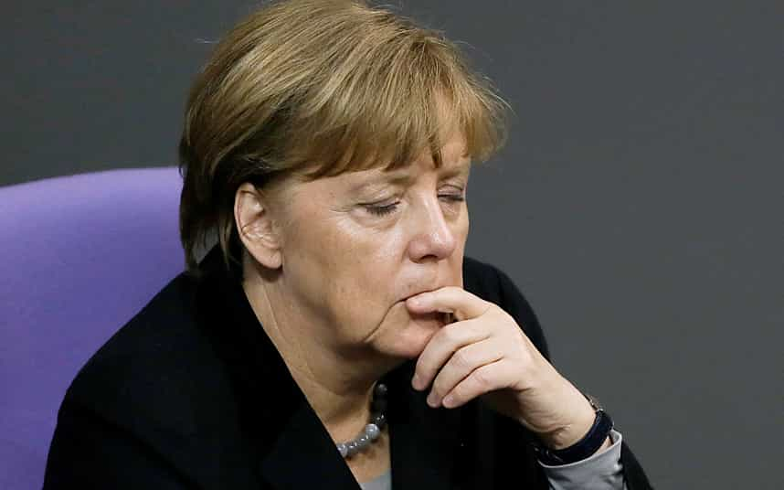

This account syndicates news from other media outlets.


Boris Johnson has made a pitch to be Prime Minister of a new ‘great’ Britain outside the EU after a devastated David Cameron announced his resignation.
Mr Johnson started to set out his vision for a revitalised, outward looking country in a speech just hours after his long-time rival tearfully declared that he would stand aside in the wake of the referendum Brexit vote.
But it immediately became clear that whoever is in Downing Street will face a struggle to hold the UK together – as SNP leader Nicola Sturgeon warned it was now ‘highly likely’ that a second ballot on independence will be held north of the border.
The developments came after the Leave campaign stacked up 52 per cent of the votes – despite massive support for Remain in Scotland and major cities including London.
The Bank of England governor Mark Carney has attempted to reassure panicking markets this morning after the Pound nose-dived to its lowest level against the US dollar for 31 years, and the FTSE slumped by 8 per cent.
Flanked by wife Samantha in Downing Street, Mr Cameron said he had been ‘proud’ to serve as PM for the past six years.
But he said it would not be right for him to be the ‘captain of the ship’ while the UK negotiated its exit from the EU.
After his speech, Mr Cameron travelled to Buckingham Palace to discuss the results with the Queen.

Prince Charles getting reprimanded by his boss Evelyn de Rothschild
The bombshell announcement came after possibly the most dramatic night Britain has experienced in peacetime. Among the biggest developments are:

Mr Johnson, who was booed and called a ‘tw*t’ by protesters as he left his home in central London this morning, started off his statement at the Vote Leave HQ in central London by paying tribute to his ‘extraordinary’ Tory colleague Mr Cameron.
The former London mayor stopped short of confirming that he would stand to succeed the PM – but made a pitch for people to help him forge a better future.
He also sought to soothe fears over the financial market panic that has greeted the historic result, stressing that nothing would change in the short term.
Read Next: Did The Global Elite Fumble By Allowing The Brexit Vote?